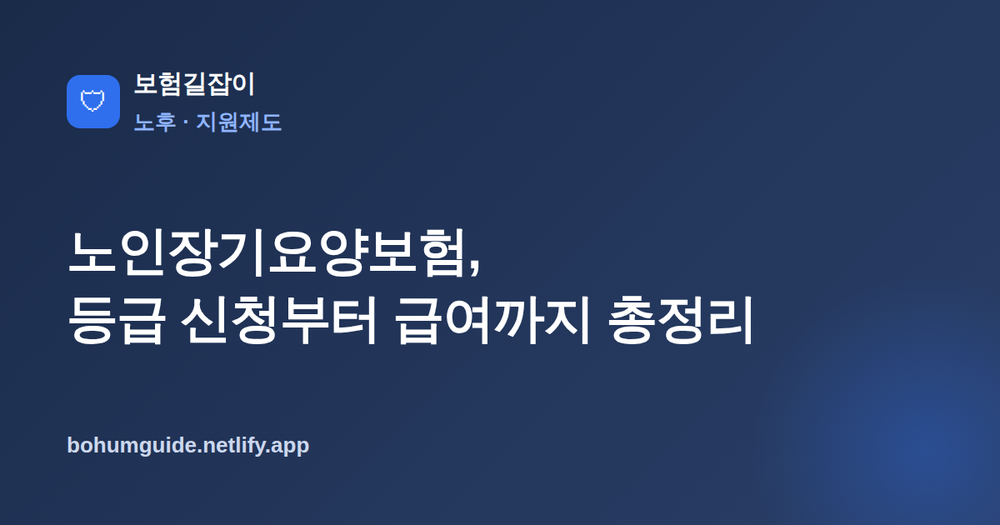

노인장기요양보험, 등급 신청부터 급여까지 총정리
부모님이 나이가 들거나 노인성 질병으로 혼자 생활하기 어려워지면 가족의 부담이 급격히 커집니다. 이때 가장 먼저 확인해야 할 공적 제도가 노인장기요양보험입니다. 신청 절차와 급여의 큰 틀을 알아두면 돌봄의 방향을 잡기가 훨씬 수월합니다.

✍️ 편집자 참고: 본 글은 초안입니다. 등급 기준·급여 종류·본인부담률은 제도 개정으로 바뀌니 게시 전 국민건강보험공단 최신 기준으로 검수·수정해 주세요.
거동이 불편한 어르신을 모시게 되면 가장 먼저 부딪히는 벽이 "무엇부터 알아봐야 하나"입니다. 민간 간병 서비스를 알아보기 전에, 국가가 운영하는 노인장기요양보험부터 확인하는 것이 순서입니다. 많은 분이 이름만 들어봤을 뿐 어떻게 신청하고 무엇을 받을 수 있는지 잘 모르는데, 큰 틀을 정리해 두면 돌봄 계획을 세우기가 훨씬 쉬워집니다.
노인장기요양보험이란 무엇인가
노인장기요양보험은 고령이나 치매·중풍 같은 노인성 질병으로 혼자 일상생활을 하기 어려운 분의 요양을 사회적으로 지원하는 공적 제도입니다. 건강보험이 병을 '치료'하는 데 초점을 둔다면, 장기요양보험은 씻고 먹고 이동하는 등 '생활을 돌보는' 데 초점을 둡니다. 재원은 건강보험료와 함께 걷는 장기요양보험료, 국가 지원, 이용자 본인부담으로 마련되며 운영은 국민건강보험공단이 맡습니다.
중요한 점은 이 제도가 단순한 나이가 아니라 '혼자 생활하기 어려운 상태'를 기준으로 지원한다는 것입니다. 따라서 신청한다고 누구나 대상이 되는 것은 아니며, 뒤에서 설명할 등급 판정을 거쳐 지원 여부와 범위가 정해집니다. 어르신 본인은 물론이고, 실제로 돌봄을 감당하는 가족의 부담을 함께 덜어 준다는 점에서 노후 돌봄의 기본 토대가 되는 제도입니다.
등급 신청과 판정 절차
지원을 받으려면 먼저 등급을 신청해 판정을 받아야 합니다. 절차는 대체로 다음 흐름을 따릅니다. 세부 기준은 제도 개정으로 바뀔 수 있으니 진행 전 공단에서 최신 안내를 확인하는 것이 안전합니다.
신청부터 판정까지의 흐름
- 국민건강보험공단에 장기요양인정 신청(본인·가족·대리인 가능, 방문·우편·온라인 등)
- 공단 직원이 방문해 심신 상태를 확인하는 방문조사(인정조사) 진행
- 주치의 등이 작성한 의사소견서 제출
- 조사 결과와 소견서를 바탕으로 등급판정위원회가 등급 결정
판정 결과는 일반적으로 돌봄이 필요한 정도에 따라 여러 등급으로 나뉘며, 치매 등을 고려한 인지지원 성격의 등급이 별도로 운영되기도 합니다. 등급의 개수와 구분 기준, 점수 구간은 제도 개정으로 달라질 수 있으므로 특정 숫자를 단정하기보다 "현재 어떤 등급 체계가 적용되는지"를 공단 최신 기준으로 확인하는 것이 좋습니다. 등급이 나오면 이용할 수 있는 급여의 종류와 한도가 함께 안내됩니다.
핵심 정리
등급 신청은 비용이 들지 않고, 결과가 아쉬우면 이의신청도 가능합니다. "우리 부모님은 아직 그 정도는 아니다"라며 미루기보다, 상태가 애매할 때 일단 신청해 판정을 받아 보는 편이 선택지를 넓히는 데 유리합니다.
등급별로 이용하는 급여
등급을 받으면 상황에 맞춰 급여를 선택합니다. 크게 집에서 도움을 받는 재가급여와 시설에 입소하는 시설급여로 나뉘고, 별도로 복지용구 지원도 있습니다. 어떤 급여가 맞는지는 어르신의 상태와 가족의 돌봄 여건에 따라 달라집니다.
| 구분 | 이용 형태 | 대표 서비스(예시) |
|---|---|---|
| 재가급여 | 집에 머무르며 방문·이용 | 방문요양, 방문목욕, 방문간호, 주야간보호 등 |
| 시설급여 | 요양시설에 입소 | 노인요양원, 노인요양공동생활가정 등 |
| 복지용구 | 기구 구입·대여 지원 | 보행기, 침대, 이동변기 등 일상 보조기구 |
일반적으로 상태가 비교적 안정적이고 가족이 함께 돌볼 수 있으면 재가급여로 요양보호사의 방문 도움이나 주야간보호를 활용하고, 상태가 무겁거나 가정 내 돌봄이 어려우면 시설급여로 요양원 입소를 고려합니다. 어떤 급여를 어느 한도까지 쓸 수 있는지는 등급과 그해 기준에 따라 정해지므로, 실제 선택 전에 공단·지사 상담을 통해 내 조건에 맞는 조합을 확인하는 것이 좋습니다.
본인부담과 민간 간병·치매보험과의 관계
장기요양 급여는 전액 무료가 아니라, 이용 비용의 일부를 이용자가 부담하는 구조입니다. 일반적으로 재가급여와 시설급여의 본인부담 비율이 다르게 설정되고, 소득 수준에 따라 부담을 덜어 주는 경감 제도도 운영됩니다. 다만 본인부담률과 경감 기준은 제도 개정으로 바뀌므로 구체적 숫자는 국민건강보험공단 최신 기준으로 확인해야 합니다.
공적 제도가 기본, 민간 보험이 보완
중요한 것은 순서입니다. 노인 돌봄 비용의 기본 골격은 노인장기요양보험이라는 공적 제도가 담당하고, 그 위에서 본인부담분이나 비급여, 시설 이용 시 발생하는 추가 비용을 민간 보험이 보완하는 구조로 이해하면 좋습니다. 예컨대 간병 인력 비용이나 진단 시 목돈이 걱정된다면 간병보험 총정리와 치매보험 총정리를 함께 살펴보며 공적 급여로 메워지지 않는 부분을 점검할 수 있습니다.
정리하면, 민간 간병·치매보험은 장기요양보험을 '대체'하는 것이 아니라 그 빈틈을 '보완'하는 역할입니다. 노후 대비 전반을 미리 손보고 싶다면 은퇴를 앞두고 점검할 보험을 참고해 공적 제도와 민간 보험의 역할을 구분해 두는 것이 도움이 됩니다.
실전 체크 & 요약
부모님 돌봄이 시작될 때는 다음 순서를 기억하면 헷갈리지 않습니다. 첫째, 국민건강보험공단에 장기요양인정을 신청해 등급 판정부터 받습니다. 둘째, 등급이 나오면 재가·시설급여 중 어르신 상태와 가족 여건에 맞는 방식을 상담을 통해 정합니다. 셋째, 본인부담과 비급여 등 공적 급여로 채워지지 않는 부분은 민간 간병·치매보험으로 보완할지 검토합니다.
- 단순 노화가 아니라 노인성 질병·거동 곤란이면 우선 등급 신청부터
- 등급·급여 종류·본인부담률은 제도 개정으로 바뀐다는 점을 전제로 확인
- 재가급여와 시설급여의 차이를 이해하고 가족 여건에 맞게 선택
- 공적 급여가 기본, 민간 보험은 빈틈을 메우는 보완재로 접근
본 정보는 일반적인 안내이며, 등급 기준·급여·본인부담은 국민건강보험공단 등 관계기관을 통해 반드시 확인하시기 바랍니다.